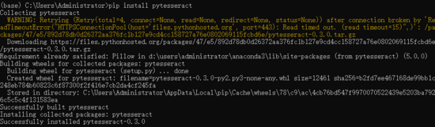
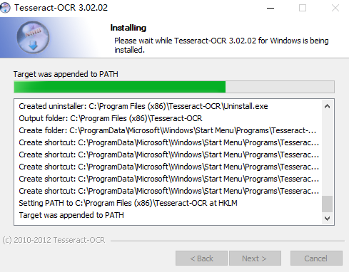
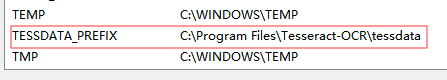
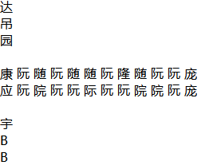
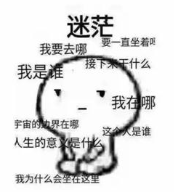
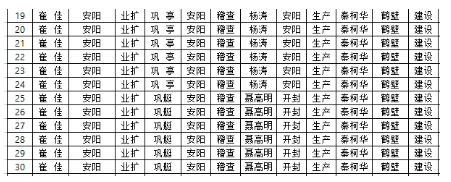
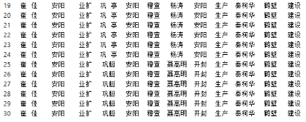
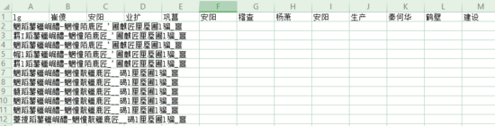
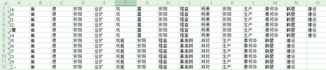
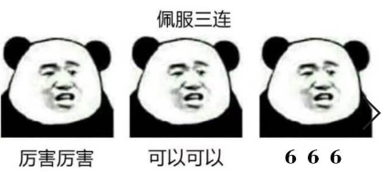

原文连接:https://www.cnblogs.com/7758520lzy/p/12106763.html
一.简介
Tesseract是一个开源的文本识别【OCR】引擎，可通过Apache 2.0许可获得。它可以直接使用，或者使用API从图像中提取打印的文本，支持多种语言。该软件包包含一个ORC引擎【libtesseract】和一个命令行程序【tesseract】。Tesseract4添加了一个新的基于LSTM的OCR引擎，该引擎专注于行识别，但仍支持Tesseract 3的传统Tesseract OCR引擎，该引擎通过识别字符模式进行工作。通过使用传统OCR引擎模式【--oem 0】，可以与Tesseract 3兼容。它还需要训练好的数据文件对旧引擎进行支持，例如tessdata目录下的数据文件。

特点：
1.具有Unicode【UTF-8】支持，并且可以“开箱即用”地识别100多种语言。
2.支持各种输出格式，纯文本，hOCR【HTML】，PDF，仅不可见文本的PDF，TSV。Master分支还对ALTO【XML】输出提供实验性支持。
3.在许多情况下，要想获得更好的OCR结果，需要提高提供给Tesseract的图像的质量。
二.在python环境中安装pytesseract

安装成功！
三.在Windows系统下安装Tesseract

配置环境变量：

备注：最新的为4.1.0，建议安装4.x版本，根据一可知，版本4有重大升级，系统性能显著提升，特别是在对中文的识别上更是明显！
四.python代码实现
1 # -*- coding: utf-8 -*-
2 """
3 Spyder Editor
4
5 This is a temporary script file.
6 """
7
8 import pytesseract
9 from PIL import Image
10
11 #打开验证码图片
12 image = Image.open('E:\\testData\\tess\\1.png')
13 #加载一下图片防止报错，此处可以省略
14 #image.load()
15 #调用show来展示图片，调试用此处可以省略
16 #image.show()
17 text = pytesseract.image_to_string(image,lang='chi_sim')
18 print(text)
五.Python环境执行结果【无数据清洗】
20
a
志
口
吴
吊
5
达
吊
园
康 阮 随 阮 随 随 阮 隆 随 阮 阮 庞
应 阮 院 阮 阮 际 阮 阮 院 院 阮 庞
宇
B
B
B
B
B
B
B
B
B
B
E
胡
胡
胡
胡
胡
胡
胡
胡
胡
胡
脱 医
剧 澈 剖 剖 亨 亨 定 亨 宣 河
宇
B
B
B
B
E
E
E
E
E
E
振
产 莲
主
主
主
主
主
主
主
主
主
主
生 交
E
E
E
E
E
E
E
E
E
E
E35653
职
职
职
职
职
职
职
职
职
职
E
E
E
E
E
E
E
E
E
E
E
093
View Code部分示例：

可知对中文的识别一塌糊涂，因此建议还是使用版本4进行识别！

六.使用Java程序调用ImageIO进行数据预处理
1 package zhen;
2 import java.awt.Color;
3 import java.awt.image.BufferedImage;
4 import java.io.File;
5 import java.io.FileInputStream;
6 import java.io.IOException;
7
8 import javax.imageio.ImageIO;
9
10
11 public class LineMark{
12 public static void clean(String fromPath,String toPath) throws IOException{
13 File file1 = new File(fromPath);
14 BufferedImage image = ImageIO.read(file1);
15
16 BufferedImage sourceImg =ImageIO.read(new FileInputStream(file1)); // 获取图片的长宽
17 int width = sourceImg.getWidth();
18 int height = sourceImg.getHeight();
19
20 /**
21 * 创建3维数组用于保存图片rgb数据
22 */
23 int[][][] array = new int[width][height][3];
24 for(int i=0;i<width;i++){ // 获取图片中所有像素点的rgb
25 for(int j=0;j<height;j++){
26 int pixel = image.getRGB(i, j); //获得坐标(i,j)的像素
27 int red = (pixel & 0xff0000) >> 16;
28 int green = (pixel & 0xff00) >> 8;
29 int blue = (pixel & 0xff); //通过坐标(i,j)的像素值获得r,g,b的值
30 array[i][j][0] = red;
31 array[i][j][1] = green;
32 array[i][j][2] = blue;
33 }
34 }
35
36 /**
37 * 清除表格线：
38 * 竖线：绝大多数点的x值都为255
39 */
40 for(int i=0;i<width;i++){
41 int nums = 0;
42 for(int j=0;j<height;j++){
43 if(array[i][j][0]<128 && array[i][j][1]<128 && array[i][j][2]<128){
44 nums += 1;
45 }
46 }
47 if(nums > height * 0.8){
48 for(int n=0;n<height;n++){
49 array[i][n][0] = 255;
50 array[i][n][1] = 255;
51 array[i][n][2] = 255;
52 }
53 }
54 }
55 /**
56 * 清除表格线：
57 * 横线：绝大多数点的y值都为255
58 */
59 for(int j=0;j<height;j++){
60 int nums = 0;
61 for(int i=0;i<width;i++){
62 if(array[i][j][0]<128 && array[i][j][1]<128 && array[i][j][2]<128){
63 nums += 1;
64 }
65 }
66 if(nums > height * 0.8){
67 for(int n=0;n<width;n++){
68 array[n][j][0] = 255;
69 array[n][j][1] = 255;
70 array[n][j][2] = 255;
71 }
72 }
73 }
74 /**
75 * 大点
76 */
77 for(int i=0;i<width;i++){
78 for(int j=0;j<height;j++){
79 int cover = new Color(array[i][j][0],array[i][j][1],array[i][j][2]).getRGB();
80 image.setRGB(i,j,cover);
81 }
82 }
83 File file2 = new File(toPath);
84 ImageIO.write(image, "png", file2);
85 }
86
87 /**
88 * 测试
89 * @param args
90 */
91 public static void main(String[] args){
92 String fromPath = "E:\\testData\\tess\\111.png";
93 String toPath = "E:\\testData\\tess\\112.png";
94 try {
95 LineMark.clean(fromPath,toPath);
96 } catch (IOException e) {
97 e.printStackTrace();
98 }
99 }
100 }
七.执行结果
处理之前：

处理之后：


八.使用Tesseract 4 API进行文字识别
1 package zhen;
2 import java.awt.Rectangle;
3 import java.awt.image.BufferedImage;
4 import java.io.File;
5 import java.io.FileInputStream;
6 import java.io.FileOutputStream;
7 import java.io.IOException;
8 import javax.imageio.ImageIO;
9 import net.sourceforge.tess4j.*;
10 import org.apache.poi.xssf.usermodel.*;
11
12 public class RP {
13 private String a0="";
14
15 public void toExcel(int i,XSSFWorkbook wb,XSSFSheet sheet,int len) //将文字信息做成表格
16 {
17 for(int j=0;j<len;j++){
18 String[] array = this.a0.split("\n"); // 分行
19 for(int k=0;k<array.length;k++){
20 XSSFRow row = sheet.createRow(k); // 创建一行
21 String[] array2 = array[k].split(" ");
22 for(int m=0;m<array2.length;m++){
23 row.createCell(m).setCellValue(array2[m]);
24 }
25 }
26 }
27 }
28 public static void main(String[] args) throws IOException {
29 RP rp = new RP();
30 int num = 1;
31
32 File root = new File("E:\\testData\\tess2");//存放处理后的图片，imgs文件夹
33 File res = new File("E:\\testData\\tess");//源图片位置，res文件夹下
34
35 ITesseract instance = new Tesseract();
36 instance.setLanguage("chi_sim"); //使用训练好中文字库识别
37
38 XSSFWorkbook wb = new XSSFWorkbook();
39 XSSFSheet sheet = wb.createSheet("信息汇总");
40 try {
41 File[] ress = res.listFiles();
42 int i=0;
43 for(File file : ress){
44 i++;
45 LineMark.clean(file.getAbsolutePath(),"E:\\testData\\tess2\\"+i+".png");
46 } //去除源图片表格线，处理后的图片放到img文件夹
47
48 File[] files = root.listFiles();
49 for (File file : files) { //对去除水印后的图片逐个处理
50 BufferedImage sourceImg =ImageIO.read(new FileInputStream(file)); // 获取图片的长宽
51 int width = sourceImg.getWidth();
52 int height = sourceImg.getHeight();
53 Rectangle ret = new Rectangle(0,0,width,height); //识别全部数据
54
55 String result = instance.doOCR(file, ret); //开始采用doOCR(file)效率很低，因为图片内容太多
56 int len = 0;
57 if(result != null){
58 len = result.split(" ").length;
59 rp.a0 = result;
60 }
61 System.out.print(result);
62 rp.toExcel(num,wb,sheet,len); //调用toExcel函数，将提取到的信息写入
63 num++;
64 }
65 } catch (TesseractException e) {
66 System.err.println(e.getMessage());
67 }
68
69 try {
70 FileOutputStream fout = new FileOutputStream("D:\\software\\company.xlsx");
71 wb.write(fout);
72 fout.close();
73 } catch (IOException e) {
74 e.printStackTrace();
75 } //把写好信息的表输出
76 }
77
78 }
九.不数据清洗执行结果

十.数据清洗执行结果

经过对比可以明显看出，表格线对识别的影响很大【其它形式的干扰也同样如此，例如：验证码上的干扰线、图案等】，因此，数据清洗必不可少！

十一.分析
从上面的执行结果可知，在使用Tesseract 4时，在数据尽可能的清晰的情况下，大部分汉字还是能识别出来的，只是在【数字0】和【标点符号。】，【英语g】和【数字9】等外形相识的地方识别不清楚！当然，模型还有提升的空间，下一步将提升对存在格式倾斜或拍照的图片进行识别的能力！